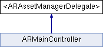

#import <ARAssetManager.h>
Inheritance diagram for <ARAssetManagerDelegate>:

Public Member Functions | |
| (void) | - assetManager:didLoadData:forAsset: |
| (void) | - assetManager:didFailWithError:forAsset: |
| (NSData *) | - assetManager:respondToSynchronousRequest:withResponse:error: |
Detailed Description
Protocol that should be implemented by users of the ARAssetManager class.
Member Function Documentation
| - (void) assetManager: | (ARAssetManager *) | manager | ||
| didFailWithError: | (NSError *) | error | ||
| forAsset: | (ARAsset *) | asset | ||
Called when the asset manager has failed to load asset data.
- Parameters:
-
manager The sender of the message. error The error that occured. May be nil or any kind of error. asset The asset for which data has failed to load.
| - (void) assetManager: | (ARAssetManager *) | manager | ||
| didLoadData: | (NSData *) | data | ||
| forAsset: | (ARAsset *) | asset | ||
Called when the asset manager has finished and successfully loaded asset data.
- Parameters:
-
manager The sender of the message. data The asset data that has been loaded. asset The asset for which data has been loaded.
| - (NSData *) assetManager: | (ARAssetManager *) | manager | ||
| respondToSynchronousRequest: | (NSURLRequest *) | request | ||
| withResponse: | (NSURLResponse **) | response | ||
| error: | (NSError **) | error | ||
[optional] |
Optional method that allows the delegate to inject a specific response to a request, which is useful for testing.
- Parameters:
-
manager The sender of the message. request The request that needs a response. response This memory location should hold the response to the request, or nil. Should not be a NULL-reference. error This memory location should hold the error that occured, or nil. Should not be a NULL-reference.
- Note:
- This method may be called on a thread other than the main thread.
The documentation for this protocol was generated from the following file:
- Sources/ARAssetManager.h
Generated on Tue Jul 6 2010 08:57:30 for iBetelgeuse by
 1.7.0
1.7.0